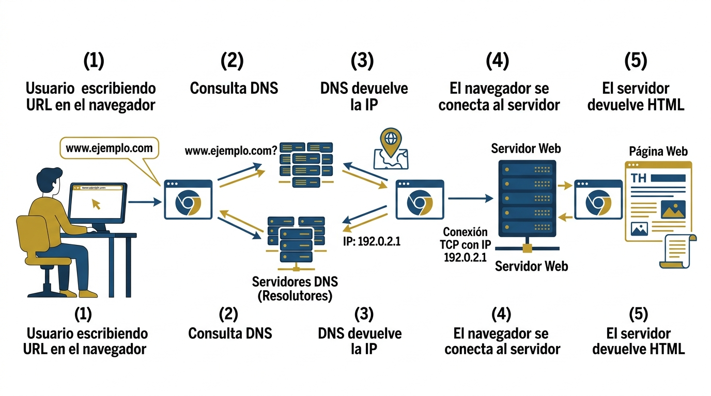

Paso 1: Que ocurre cuando escribes una URL?
Cuando escribes una direccion web en tu navegador (por ejemplo
https://www.utpl.edu.ec), el sistema inicia un proceso
automatizado de multiples pasos para mostrarte la pagina correcta.

Que es una URL?
URL significa Uniform Resource Locator (Localizador Uniforme de Recursos). Es la direccion unica que identifica un recurso en Internet.
| Componente | Ejemplo | Descripcion |
|---|---|---|
| Protocolo | https:// | Define como viajan los datos |
| Dominio | www.utpl.edu.ec | Nombre del servidor |
| Ruta | /carrera/sistemas | Recurso especifico |
| Parametros | ?id=42 | Datos adicionales para el servidor |
Pasos del proceso
- El usuario escribe la URL en el navegador.
- El navegador consulta el DNS para convertir el dominio en IP.
- El navegador envia una peticion HTTP al servidor.
- El servidor responde con el contenido HTML.
- El navegador interpreta y renderiza la pagina.